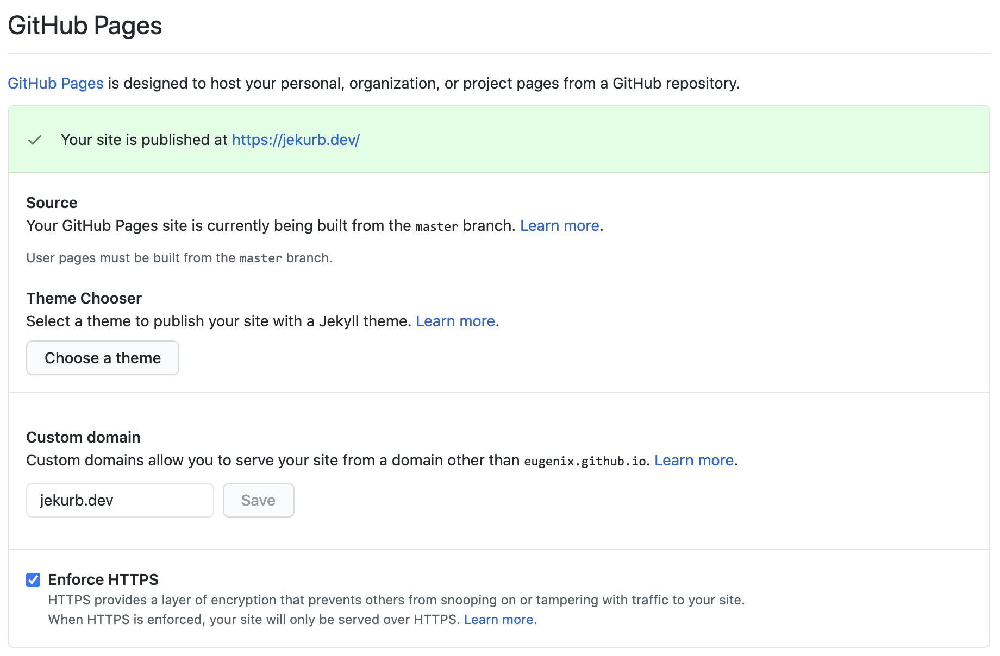
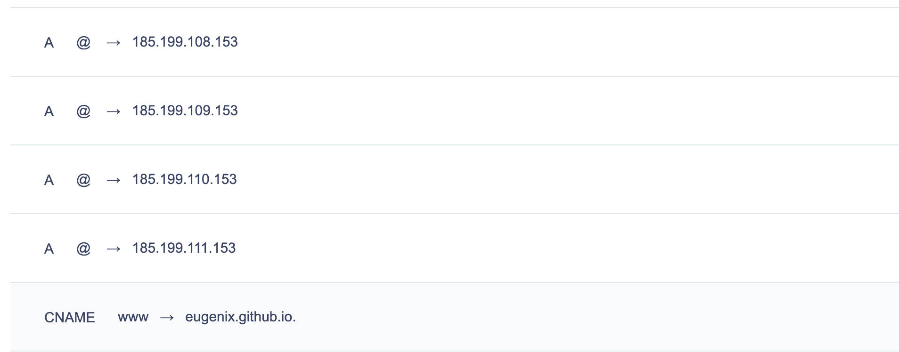

Создаем техблог за вечер с CD pipeline и блэкджеком
Вчера вечером в очередной раз понял, что хочу завести свой технический блог. В прошлом уже были неудачные попытки,
когда интерес к этой затее терялся. Но мы же оптимисты - и в этот в раз все будет по-другому! 💪 Дабы не растерять
запал решил как можно быстрее сделать первый шаг - зарелизить платформу для блога.
Итак, начнем с требований:
- Простота написания контента
- Минималистичный дизайн
- Хранение всего в системе контроля версий, можно это назвать подходом - Blog as Code
- Простота и бесплатность хостинга
- Простое и уникальное доменное имя
- CD pipeline со smoke-тестами и выкладкой на хостинг по коммиту
Думаю, для технического блога программиста самое оно 😉
Простота написания контента
Для этого удобно использовать старый добрый markdown и статический генератор на основе него. Перечислю основные проекты:
В итоге в результате беглого сравнения мой выбор пал на Hugo, понравилась документация, много звезд на github, более производительный так как написан на Go (как заявляет автор < 1 ms per page).
Следуя Quick start guide легко создаем основу блога и первый контент.
brew install hugo
hugo new site jekurb
hugo new posts/blog-kick-off/index.md
hugo server -D
Минималистичный дизайн
Основной фокус блога будет на контенте, поэтому в дизайне и функциональности не должно быть ничего лишнего. У Hugo есть отдельный репозиторий с темами. Мой топ-3 тем для блога:
С большой долей вероятности в теме в будущем будут какие-то кастомные правки, поэтому лучше класть в /themes ее как не как git module, а просто скачав исходный код. Для активации темы в config.toml добавляем:
theme = "hugo-ink"
Blog as Code
В моем случае все будет храниться в репозитории на github. Не забываем добавить в .gitignore все то, что генерится Hugo.
public
.idea
resources/_gen
Немного о структуре директорий Hugo
.
├── archetypes | архетипы, на основе который будут создаваться блог посты с помощью команды hugo new
├── config.toml | основной конфигурационный файл
├── content | контент в виде md файлов, структура может быть вложенной
├── data | конфигурационные файлы для генерации
├── layouts | шаблоны для страниц
├── public | сборка сайта
├── resources | кэш
├── static | статичные файлы, копируются при генерации
└── themes | установленные темы
Простота и бесплатность хостинга
Давно известно, у github есть замечательная фича Gihub pages, которая позволяет хостить статический сайт напрямую из репозитория. И да, это бесплатно. Поэтому заведем второй репозиторий для “релизного билда” блога.
Доменное имя
После некоторых раздумий, было выбрано доменное имя jekurb.dev и успешно зарегистрированно на reg.ru. Стоимость регистрации в этой зоне - 1392 RUB за год. Следующим шагом будет custom domains в Github pages, для этого переходим в настройки репозитория.  Альтернативный способ установки поля Custom domain - создание CNAME в репозитории. Далее идем к регистратору и настаиваем DNS записи, настроим CNAME для сабдомена www, указывающую на eugenix.github.io и A records для amex домена.  Примерно через 4 часа DNS обновился и блог стал доступен по домену. На всякий случай проверяем, все ли корректно встало:
dig www.jekurb.dev +nostats +nocomments +nocmd
; <<>> DiG 9.10.6 <<>> www.jekurb.dev +nostats +nocomments +nocmd
;; global options: +cmd
;www.jekurb.dev. IN A
www.jekurb.dev. 21599 IN CNAME eugenix.github.io.
eugenix.github.io. 3599 IN A 185.199.109.153
eugenix.github.io. 3599 IN A 185.199.108.153
eugenix.github.io. 3599 IN A 185.199.111.153
eugenix.github.io. 3599 IN A 185.199.110.153
dig jekurb.dev +noall +answer
; <<>> DiG 9.10.6 <<>> jekurb.dev +noall +answer
;; global options: +cmd
jekurb.dev. 21599 IN A 185.199.108.153
jekurb.dev. 21599 IN A 185.199.109.153
jekurb.dev. 21599 IN A 185.199.110.153
jekurb.dev. 21599 IN A 185.199.111.153
CD pipeline
Цель CD pipeline автоматизировать процесс релизов новых статей в блоге. Хотелось бы иметь следующий workflow:
- Автор делает push с изменениями в /master
- На билд-машине выполняется чекаут ветки
- Производится статический анализ markdown файлов
- Производится сборка сайта Hugo и push в /master Github Pages
- Выполняются smoke e2e тесты: все страницы открываются, посты отдаются, sitemap сгенерирован и тд.
- В случае ошибки на этапе тестов необходимо откатить изменения (пока не реализовано)
Ранее для этого можно было бы использовать какой-нибудь Travis CI, но с появлением Actions в Github надобность отпала. Для публичных репозиториев это бесплатно (We love open source 🥰), для приватных квота 2000 минут в месяц, затем $0.008 за минуту.
Так же нам нужен какой-то линтер для markdown файлов, конечно же решение уже есть в npm. Называется markdownlint-cli и позволяет проверять по заданному списку правил. Правила можно настроить под себя в файлике .markdownlint.json
{
"default": true,
"no-hard-tabs": false,
"MD013": { "line_length": 130 }
}
Для запуска вызвать
markdownlint-cli content
content/posts/blog-kick-off/index.md:167:98 MD009/no-trailing-spaces Trailing spaces [Expected: 0 or 2; Actual: 1]
content/posts/blog-kick-off/index.md:168 MD031/blanks-around-fences Fenced code blocks should be surrounded by blank lines [Context: "```yaml"]
Сборка и выкладка сайта будет производиться с помощью уже готового Action hugo-deploy-gh-pages. Так как push будет в другой репозиторий, нам понадобится GitHub access token. Создаем новый токен в Account Settings -> Developer Settings -> Personal Acess tokens с правами на репозиторий. Далее идем в настройки основного репозитория jekurb-blog -> Secrets, создаем секрет PERSONAL_TOKEN со значением токена. Прокидываем его в соответствующий step:
env:
TOKEN: ${{ secrets.PERSONAL_TOKEN }}
Остались smoke-тесты. Решение так же нашлось в npm. Mocha/chai - для тестирования и ассертации, cheerio/supertest - для запросов и скрапинга страниц.
{
"devDependencies": {
"chai": "^4.2.0",
"mocha": "^8.0.1",
"npm": "^6.14.6",
"supertest": "^4.0.2",
"cheerio": "^1.0.0-rc.3"
}
}
Пример теста приведен ниже, запускать через cd smoke-tests && npm test
'use strict';
const chai = require('chai');
const request = require('supertest');
const cheerio = require('cheerio');
const blog = process.env.BLOG_BASE_URL;
const expect = chai.expect;
describe('Smoke tests', function() {
describe('# Request Home', function() {
it('should return at least 1 posts', function(done) {
request(blog)
.get('/')
.end(function(err, res) {
expect(res.statusCode).to.equal(200);
var $ = cheerio.load(res.text);
expect($('div.post').length).to.be.at.least(1);
done();
});
});
});
});
Конечный файл с описанием pipline создается в .github/workflows/main.yml и выглядит как-то так…
name: Deploy to GitHub Pages on push to master
on:
push:
branches:
- master
jobs:
build:
name: Deploy
runs-on: ubuntu-latest
steps:
- name: Checkout master
uses: actions/checkout@v1
- name: Setup node
uses: actions/setup-node@v1
with:
node-version: '12.x'
- name: Setup markdownlint-cli
run: npm install -g markdownlint-cli
- name: Check markdown
run: markdownlint content
- name: Deploy the site
uses: benmatselby/hugo-deploy-gh-pages@master
env:
HUGO_VERSION: 0.74.2
TARGET_REPO: eugenix/eugenix.github.io
TOKEN: ${{ secrets.PERSONAL_TOKEN }}
HUGO_ARGS: ''
CNAME: jekurb.dev
- name: Run smoke tests
env:
BLOG_BASE_URL: https://jekurb.dev
run: cd smoke-tests && npm install && npm test
Выводы
Во-первых, стоит отметить, что 99% всего того, что использовалось, начиная движком для блога и заканчивая инфраструктурой для pipeline и хостингом есть на github.
Во-вторых, результатом я оказался доволен и смог доказать что поднять свой блог с CD pipeline’ом и блэкджеком не имея особого опыта в “блогостроении” можно за несколько часов. Главное сделать первый шаг, а дальше процесс вас затянет.